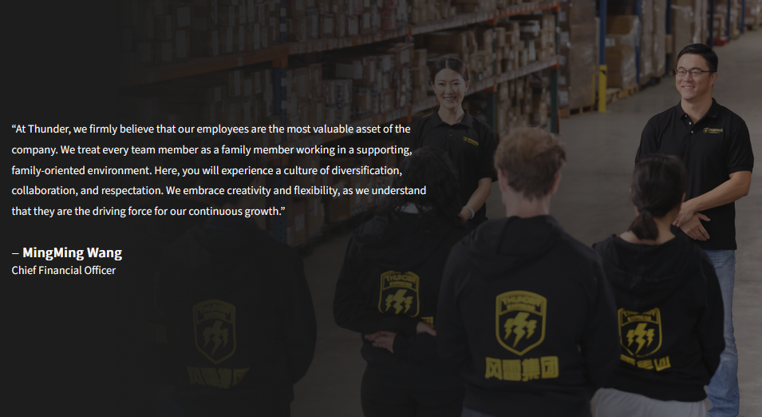

Approached by designer Qianyu Ma, I was tasked with building a corporate website for Thunderex, a multinational shipping and logistics company. I worked closely with the designer to create a website that would effectively communicate the company's brand and values, while also providing a user-friendly experience for visitors.

Our work began with a Figma design that Qianyu had created, which provided a clear vision for the website's layout and aesthetic. From there, I took on the task of bringing this design to life through code, while also giving design feedback and suggestions to ensure that the final product would be both visually appealing and functional for both desktop and mobile users. This involved a lot of back-and-forth collaboration, as we worked together to iterate on the design and make adjustments as needed to ensure that the website would meet the client's needs and expectations.
The next step was to build the website itself, which involved a combination of front-end and back-end development work. I utilized HTML, CSS, and JavaScript to create a responsive and visually appealing front-end, while also implementing back-end functionality using Node.js and Express to handle form submissions and other interactive elements on the site. I worked closely with Qianyu and the client throughout the development process to ensure that the website would meet their needs and expectations, and I was able to successfully bring the Figma design to life through code.

The final transition from development to deployment was a smooth one, with the website being successfully launched and made live for the public to view. The site is now up and running, where it serves as a key online presence for the company and helps to communicate their brand and values to potential customers and partners around the world.
This site is deployed and viewable at
thunderex.com